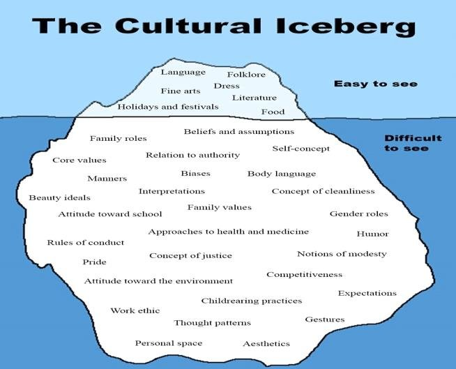

Original Blackboard item · _7400129_1
Over the past several decades there has been an increasing focus on the social determinants of health (SoDH) – factors beyond the biomedical approach, which are influenced by social conditions, political agendas and social policies. The gap between the health and wellbeing of Indigenous and non-Indigenous peoples in Australia is vast. This divide is an anathema in our continent that prides itself as a democratic nation where everyone is given a ‘fair go’. Many have worked tirelessly to reverse the health inequities experienced by Indigenous Australian Peoples. However, until the social and cultural determinants of health are better understood and addressed, progress remains painfully slow at best (Carson, Dunbar, Chenhall & Baille, 2007).
The social determinants of health are well known worldwide, and how each person fares in the following aspects can influence health equity in positive and negative ways:
(World Health Organization, 2021)
This list alludes to, but does not clearly state, several SDoH that impact Aboriginal and Torres Strait Islander peoples on a daily basis within First Peoples Nations colonised by Europeans. These include:
(Carson, Dunbar, Chenhall & Baille, 2007)
In Module 2 we examined the profound historical and contemporary impacts of colonisation on Indigenous Peoples health. The central role of this history in contemporary health issues and challenges remains the most commonly cited topic in discussions and consultations about the social determinants of Indigenous health. A history of discrimination and exclusion from citizenship, voting, government, employment, land, and society has long standing negative impacts on Indigenous Peoples (Carson, Dunbar, Chenhall & Baille, 2007 p. xxiii). The dominance of the biomedical model of health, a reductionist approach, objectifies and siloes the body into systems and pathologies, thereby excluding the whole person, including where people sit in communities and how individuals experience illness (Carson, Dunbar, Chenhall & Baille, 2007 p. 4.).
At this point, before we define and explore the social and cultural determinants of health, take time to reflect on your own perspective/understanding of what 'culture' is.
How would you describe your own culture?
What are the visible and invisible components of your culture that shape your worldview and how you view different cultures?
Consider how your own culture/worldview may impact members of different cultural groups.
This diagram shows some of the visible and hidden components of different cultures:

From: Hussain, Amjad, Bugti & Iqbal (2020). Iconic Representation of Baloch Culture: A Semiotic Analysis. Journal of Social Sciences and Humanities, 59(1): 35-49.